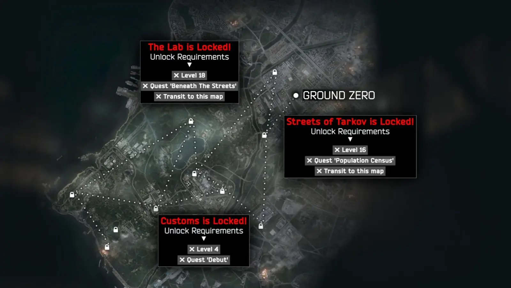

Map Progression
- Downloads
- 2,505
- Favourites
- 28
- Mod lists
- 41
A mod that introduces map progression like in live THE CITY!
<Maps Locked> By default every map in the game is locked except for Ground Zero.
<Unlocking Maps> In order to unlock a map you must complete its specific requirements.
<Map Requirements> To see the requirements for a specific map you can simply hover over the lock icon.
<Scav Requirements> If you want to run a map as a Scav you must survive on that map as a PMC enough times.
<Configuring> If the mod is too difficult or unbalanced for your mod setup, you can change every requirement through the client config! (press F12 and find the mods name)
Installation
1. Move the downloaded zip to your SPT folder
2. Unzip the .zip file with a tool like 7-zip
3. Launch your game and enjoy the mod!
Preview Image
Preview Image With Tooltips
These are the things that pop up when you hover over the locked icon of a map.

Future Plans
<> More requirements (Give me some suggestions!)
<> Move map requirement config to a server mod.
<> Add direct support for Fika (Not allowing map queue if a party member doesn’t have it unlocked)
Known Issues
<> Transiting with Fika installed will not fulfill the transit requirement.
To any mod developers who view my mod and think they can help me with modding, or see a problem in my code, please let me know what I can do better! Thanks.
Version
1.5.2
IF YOU DOWNLOADED 1.5.1 UPDATE IMMEDIATELY
Fixed
<> Mod soft locking client when Fika wasn’t installed. (oops)
1.5.1 Changelog
Changed
<> Moved player data to its own folder.
Fixed
<> Transits not being tracked when using Fika Headless.
<> Mod version not being the displayed version.
Version
1.5.0
Added
<> Global config toggles for the following [ModEnabled, EnablePmcRequirements, EnableScavRequirements, EnableLevelRequirement, EnableQuestRequirement, EnableTransitRequirement, EnableSurviveRequirement, EnableEquipmentValueRequirement]
<> Equipment value map requirement (Toggled off by default)
Version
1.4.0
Added
<> Separate requirements to run your scav on a map. (There are requirements set for labs but it doesn’t allow you to go there with your scav without the use of another mod such as SVM)
<> Map survives as a requirement to unlock them (only used for scav by default)
Changed
<> Split requirements into PMC and Scav, you will have to redo your requirements config if you had a custom one.
Version
1.3.1
Changed
<> Quest requirement split into two fields, quest display name, and quest id. Changing the quest display name does NOT change the required quest.
Fixed
<> Languages other than English not working.
<> Excluded the mod version from the .dll name. You might have multiple versions running if you’ve ever updated including now.
Version
1.3.0
Added
<> Client config for every message in the mod. (Found in F12)
Changed
<> The visual style of all of the locked map text.
Version
1.2.0
Added
<> Sound & animation when you view the map screen for the first time after unlocking a location (You can turn off the sound in F12)
Fixed
<> The maps you’ve transited to not resetting between SPT profiles
<> Some maps not counting your transits (Streets, Factory, Customs, Reserve, Labs)
Changed
<> Some backend things to do with how map requirements are handled
Version
1.1.1
Added
<> Fancy button the first time you see a newly unlocked map.
Fixed
<> Required level being 1 level higher than displayed.
Known issues
<> Currently all transit data is stored in one save.json, so the maps you’ve transited to do not reset between SPT profiles.
Version
1.1.0
If you previously installed this mod and want the latest changes to the Location requirements please delete your config file located in “\BepInEx\config\sorenbyte.SPTMapProgression.cfg”
Added
<> Transit requirement
<> Indicator for whether requirements are complete
<> Support for the Enable Labyrinth mod
Changed
<> Unlock requirements for all locations (Let me know if they feel off)
Known issues
<> Currently all transit data is stored in one save.json, so the maps you’ve transited to do not reset between SPT profiles.
Version
1.0.0
Initial upload